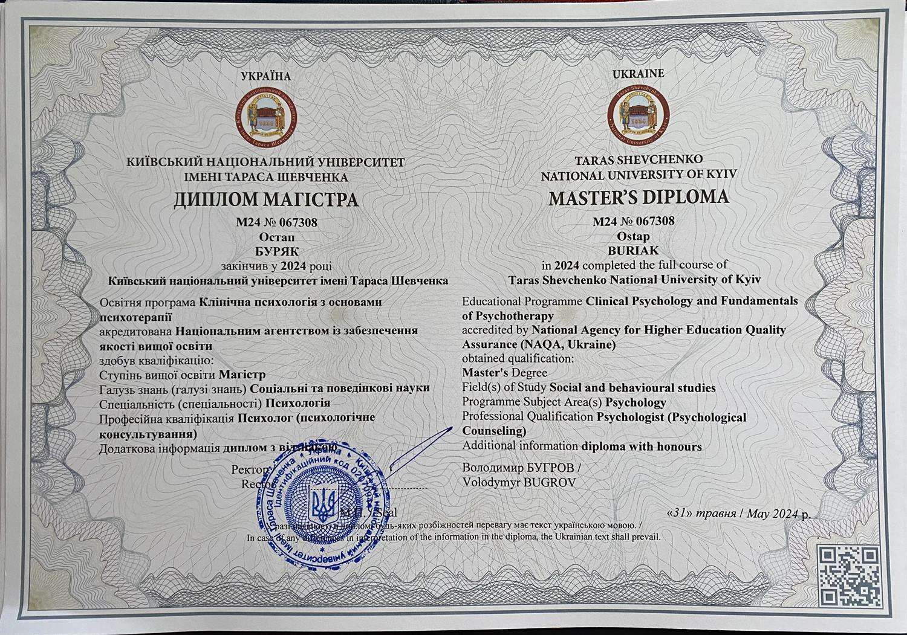
Диплом магістра з відзнакоюПсихолог · Індивідуальна терапія
Я Остап — психолог
Що хочу сказати тобі сьогодні?
Тобі не потрібно мати все розкладене по полицях. Тобі не потрібно бути вже в кінцевій точці Б і розуміти, як це життя правильно жити. Не треба мати все figured out. Цікаво звучить англійською.
Перетворювати невизначеність у визначеність — створювати фігуру. Швидко прагнучи створити фігуру (визначеність) з невизначеності, ти втрачаєш можливість знайти щось нове. Я знаю, це складно — залишитись у невідомому. Але це, певно, єдиний спосіб жити по-новому, по-своєму.
Безкоштовна зустріч — дзвінок на 15 хвилин: познайомимось, обговоримо ваш запит і зрозуміємо, чи підходимо один одному
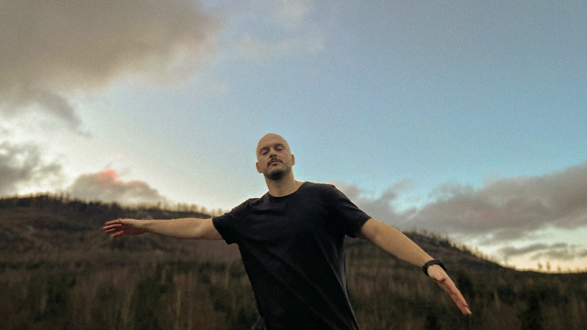
0
сесій проведено
0
роки практики
0
грн / сесія
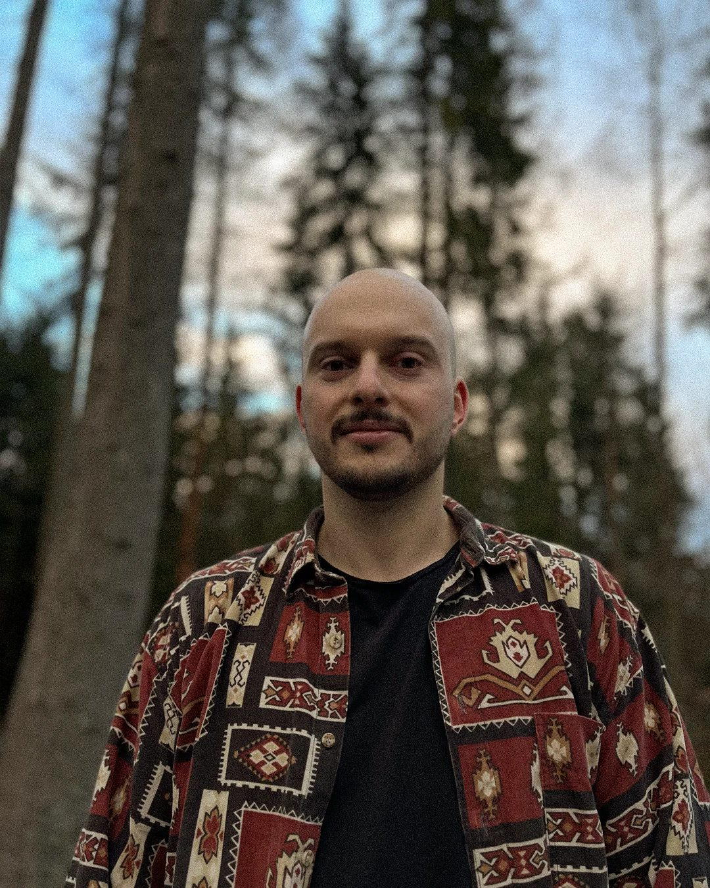
01 — Про мене
Привіт! Мене звати Остап
Я психолог та гештальт-терапевт у навчанні (4-й рік навчання, Київський Гештальт Університет). Уже 3 роки веду терапевтичну практику. У роботі використовую техніки гештальт-терапії, когнітивно-поведінкової терапії та знання з нейропсихології. Також здобуваю PhD з психології у Київському національному університеті імені Тараса Шевченка.
Про себе. Я одружений, маю 9-річного сина. До психології близько 10 років працював стратегом у сфері маркетингу та реклами. Переїхав із Києва в маленьке гірське село на Закарпатті, де зараз живу з сім’єю. Пишу вірші, фотографую, граю на музичних інструментах, досліджую роботу з тілом і медитацію.
Для мене терапія — це насамперед про знайомство із собою: можливість краще зрозуміти свої потреби, бажання та почуття, а також бути побаченим і почутим таким, яким ти є. Коли з’являється розуміння себе і підтримка, виникає простір для вибору та змін. Людина може обирати, яке життя хоче прожити, чим його наповнювати, а від чого — відмовлятися. Якщо ви готові розпочати цей шлях до себе — запрошую у терапію ❤️
02 — Запити
З чим працюю
Працюю з
Не працюю з
- хімічні залежності
- розлади особистості
- психопатологія
- спроби самогубства
Веду лише індивідуальну терапію — без парного чи сімейного формату.
03 — Метод
Підхід
Основна мета гештальт-терапії — розширення усвідомлення. Я допомагаю клієнту побачити, як його минулий досвід впливає на те, як він проживає своє життя зараз і уявляє майбутнє. Коли з’являється усвідомлення — з’являється і можливість щось змінювати.
Гештальт-терапія допомагає краще помічати свої почуття, емоції та тілесні відчуття. Основна частина сесій проходить у форматі бесіди та дослідження того, що відбувається з вами тут і зараз. За потреби та лише з вашої згоди я можу пропонувати вправи й терапевтичні експерименти.
Для мене важливо, щоб на сесії ви почувалися безпечно, а ваші почуття, переживання й межі були прийняті та почуті. Тут не буде осуду, знецінення, соромлення чи нав’язування того, як вам «правильно» почуватися або жити.
Я — людина. І все людське мені не чуже.
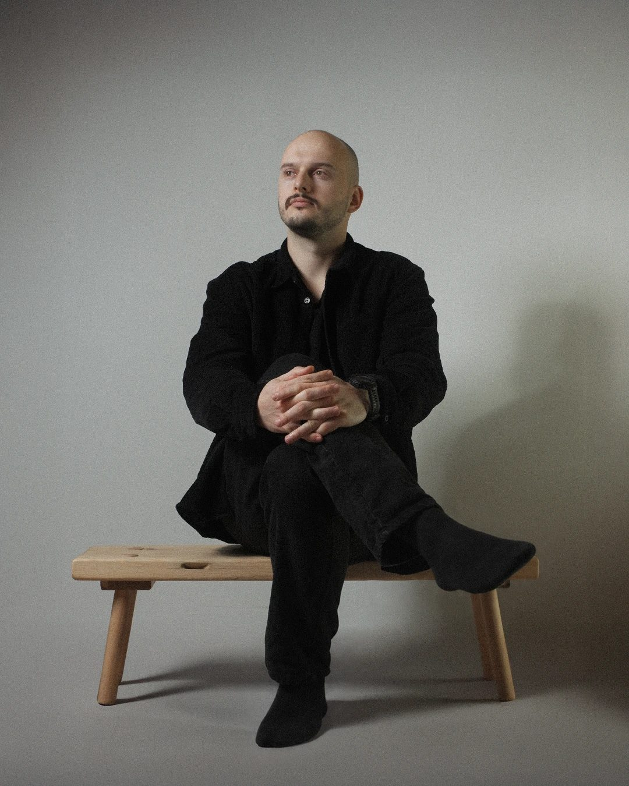
04 — Кваліфікація
Освіта
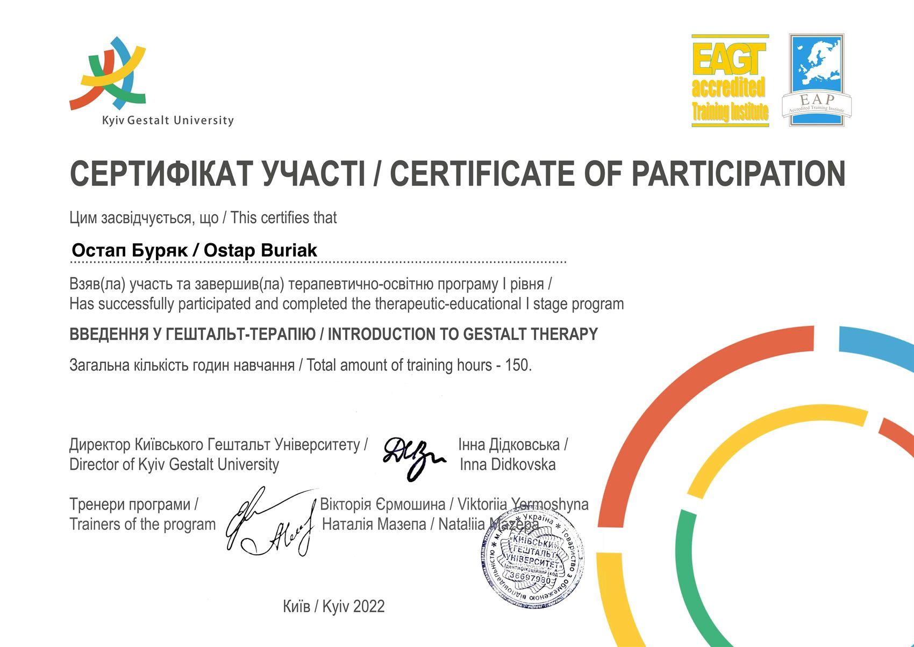
Введення у гештальт-терапію, I ступінь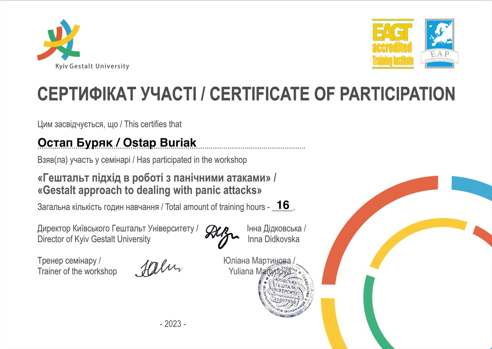
Гештальт-підхід у роботі з панічними атаками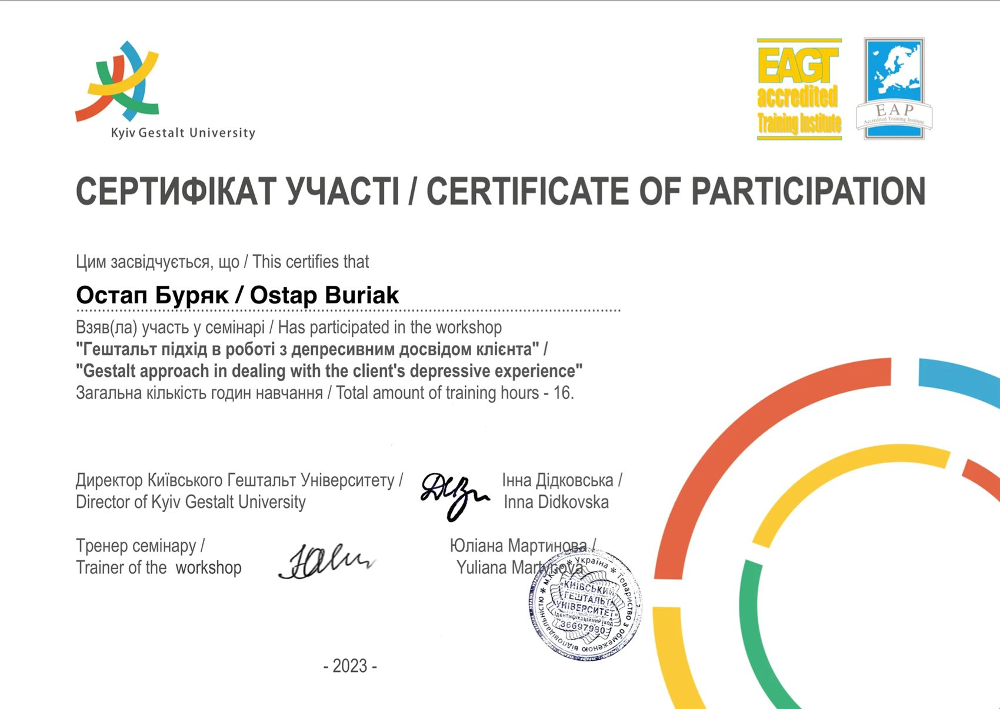
Гештальт-підхід у роботі з депресивним досвідом клієнта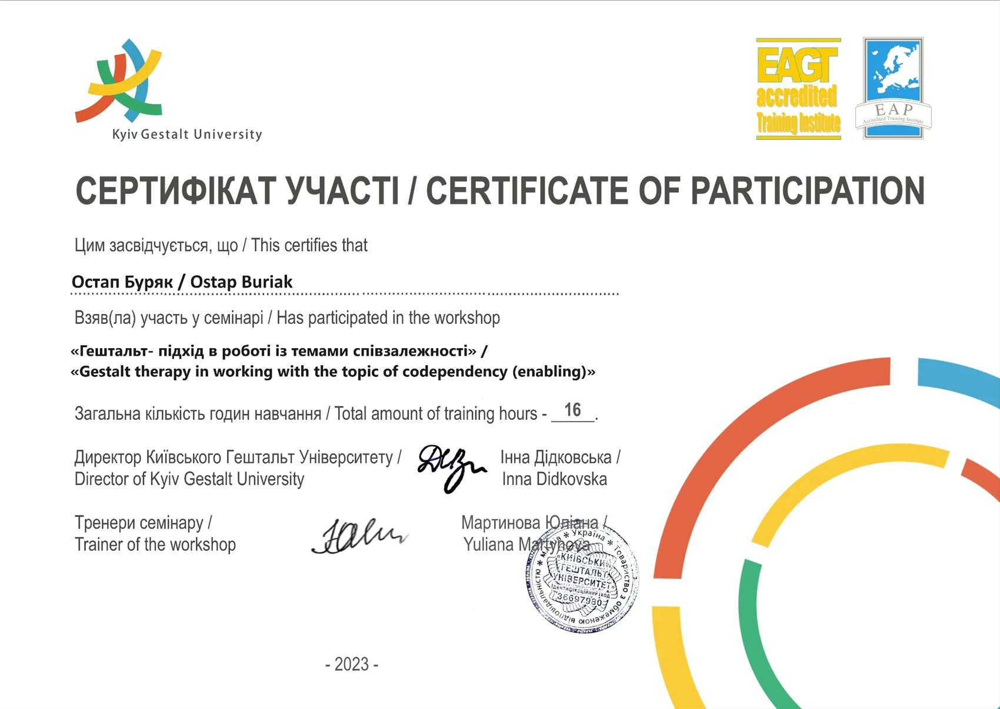
Гештальт-підхід у роботі з темами співзалежності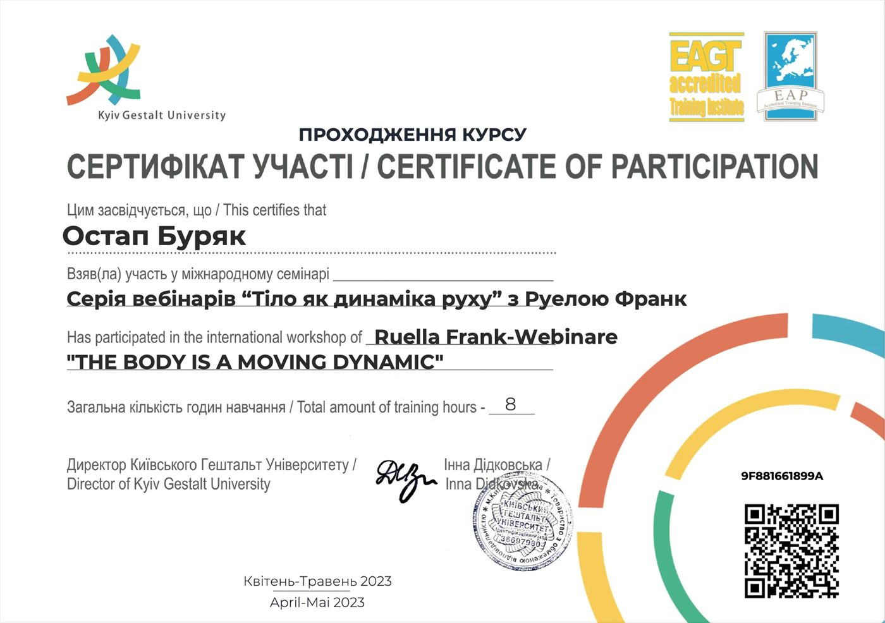
«Тіло як динаміка руху» з Руелою Франк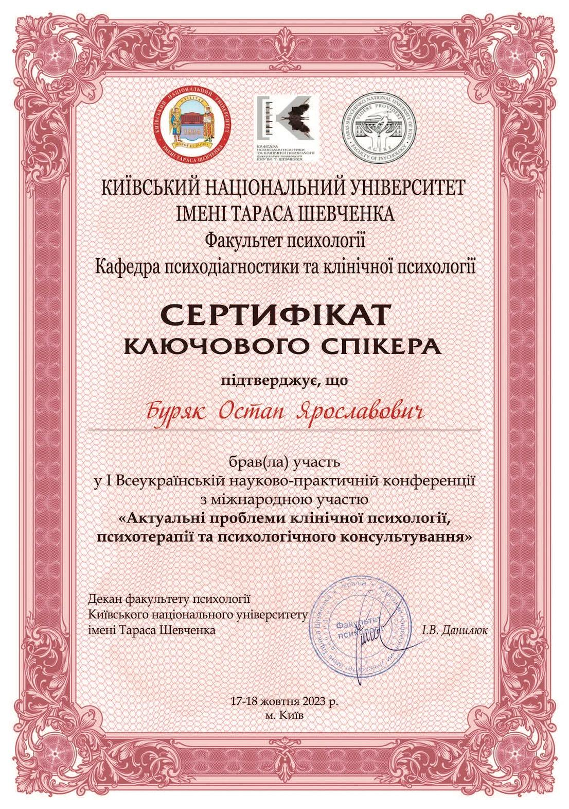
Ключовий спікер конференції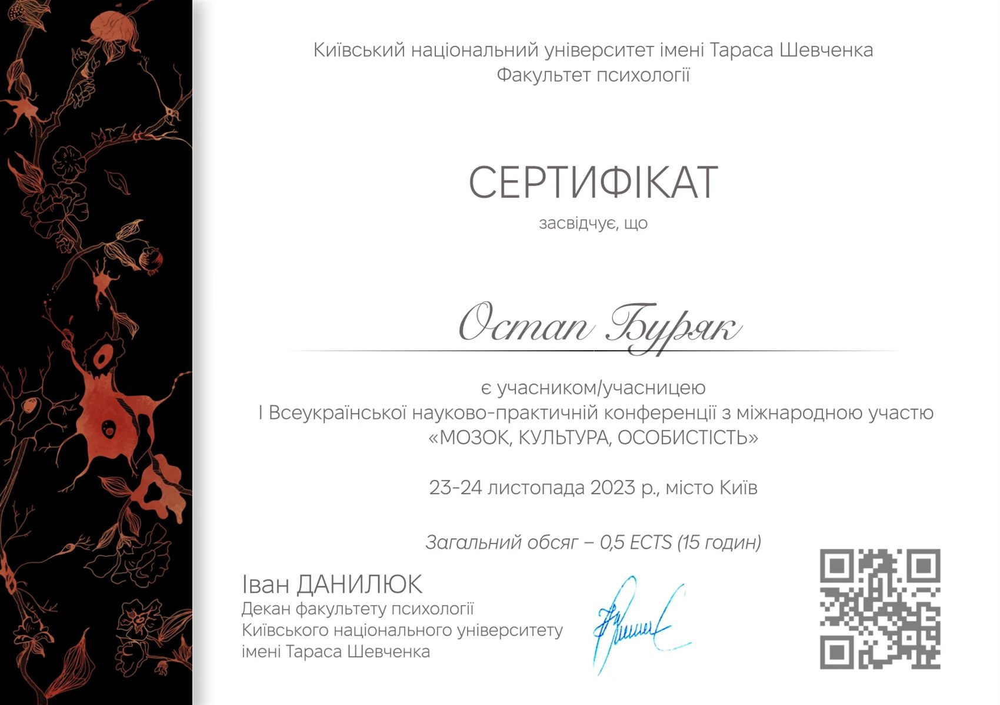
«Мозок, культура, особистість»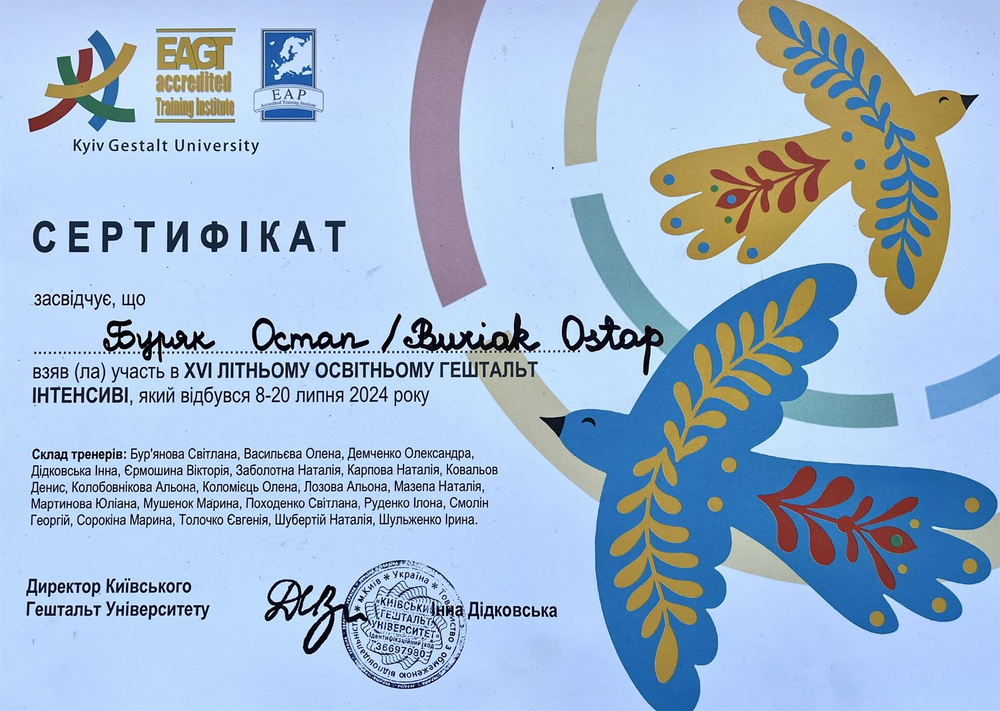
Літній освітній гештальт-інтенсив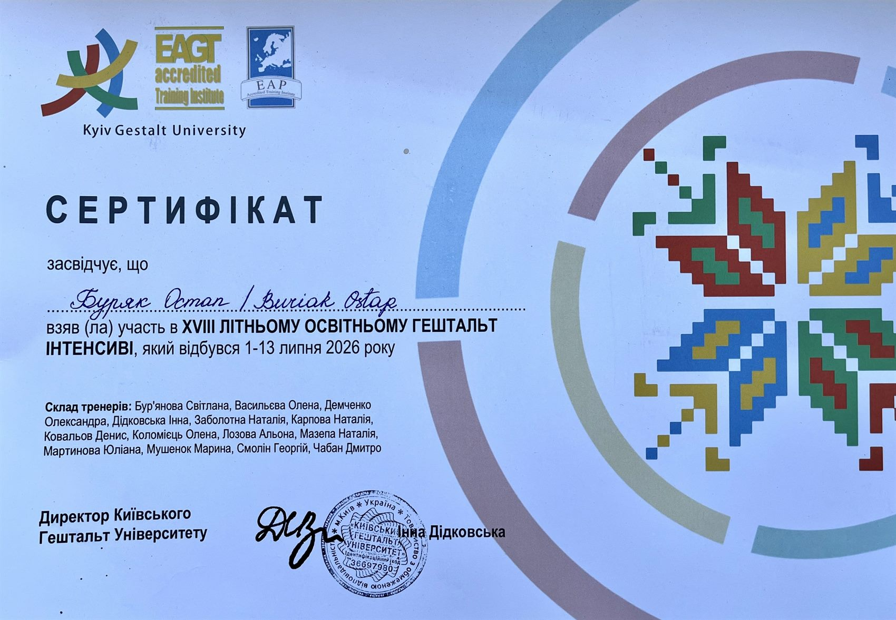
Літній освітній гештальт-інтенсив05 — Досвід клієнтів
Відгуки
Остап! По перше, написати тобі було одне з найкращих рішень у моєму житті, чесно) На початку дуже було складно відкриватись, соромно було плакати перед чужою людиною щоб не здаватись слабкою. Дякую що допоміг мені, показав мої сильні сторони, показав як відстоювати свої кордони, прибирав багато страхів, добавив впевненості! Кожен раз коли я щось роблю над чим ми з тобою працювали, згадую про тебе, що ти б зацінив це)) Був зі мною в панічні атаки, фактично тримав за руку, дуже ціную! Відчувається дуже твоя підтримка, завжди. З радістю рекомендую друзям, ти і сам це знаєш бо вони зараз працюють з тобою) Коротше дуже радію! Дякую!
Остап це дуже крутий тіп. Він чує, включається у емоційний вайб та з ним почуваєшся безпечно. 10 «а що відбувається на рівні тіла» із 10.
Остап — третій психолог, з яким я працюю, і от після перших 10 сесій я щасливий відчувати, що це «мій» терапевт. Ну як же він відчуває!! Словом, високого рівня спеціаліст та просто класна людина. Всім Остап!
Кожен сеанс додає впевненості у собі! Неймовірно вдячний за сесії! Кожна сесія наче розмова з найкращим другом. Рекомендую!
З Остапом я відчуваю себе в безпеці, я відчуваю що мене почули і зрозуміли — це дає змогу відкритися. Я стала краще розуміти себе, свої емоції та стани. Кожна сесія як крок до емоційної стабільності.
Приємний і легкий в спілкуванні спеціаліст, який ділиться своїм досвідом. За короткий час зміг допомогти знайти свої точки опори і побудувати подальший шлях.
Після кожної сесії мені ставало набагато легше і вільніше сприймати дійсність. Коментарі Остапа часто досить влучні, що дозволяють глянути на ситуацію під новим кутом.
Остап дуже класний спеціаліст. Складається враження, що він розуміє тебе з пів-слова. Його поради ґрунтуються на великій доказовій базі та власній терапії. Дуже рекомендую!
Його професіоналізм, уважність та глибоке розуміння людської психології допомогли мені віднайти внутрішню рівновагу. Кожна сесія була наповнена довірою та підтримкою.
Вже з першої сесії я відчула атмосферу прийняття та підтримки, яка сприяє відкритості. Остап уважно підходить до деталей і вміє підсвітити те, що я могла не помічати раніше.
Приємна людина, якій не страшно відкритись — з перших хвилин було зручно розмовляти наче з давно знайомим товаришем. Раджу тим, хто боїться відкриватись людям.
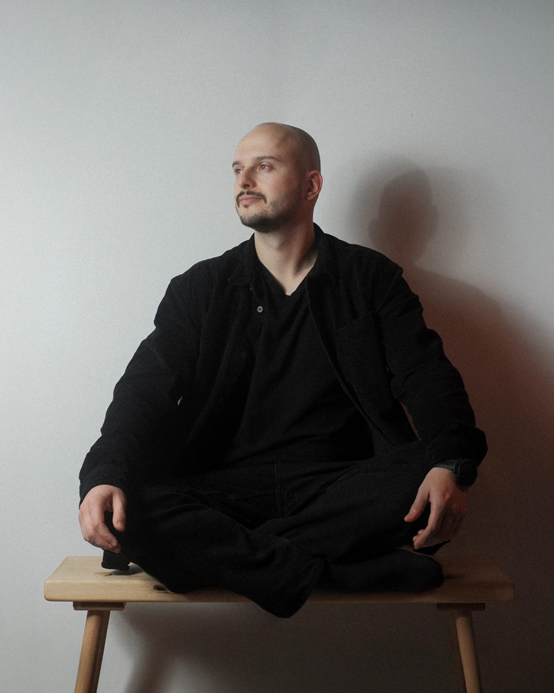
06 — Контакти
Записатись
Напишіть кілька речень про те, як ви зараз і з чим би хотіли звернутися. Якщо поки складно сформулювати свій запит — на безкоштовній зустрічі-знайомстві ми зможемо про це поговорити. Я відповім упродовж доби, і ми домовимося про зручний час.